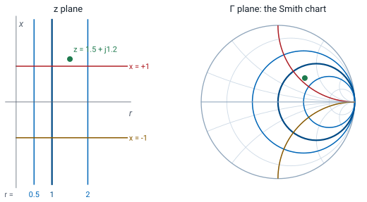
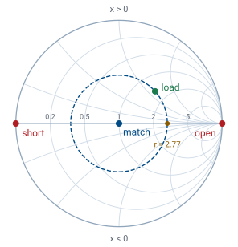

L10 - Smith Charts I#
Smith Charts I
Today we map every passive impedance onto one chart of the reflection coefficient.
Lesson 10 · Module 1: Foundations · Maj Ellis · Dr. Neil Rogers
Learning Objectives
- I can identify the various quantities represented on the Smith Chart.
Lessons 6 through 9 worked transmission line problems with algebra: the reflection coefficient from the load, the input impedance from the length, and the matching network from both. The algebra is complex arithmetic, and it hides what is happening. The Smith chart, published by Phillip H. Smith in 1939, plots the reflection coefficient and labels every point with the impedance that produces it. On the chart, moving along a line becomes a rotation, and matching becomes a path to the center. Network analyzers still display their measurements on it, including the one in the Lesson 15 lab. Today we derive what the chart plots and learn to read it.
Where We Were
Lesson 6: the reflection coefficient
Lesson 6 derived the reflection coefficient from the boundary condition at the load. It is a complex number with a magnitude that says how much of the wave returns and a phase that says how the reflected wave is shifted. For any passive load its magnitude is at most one, so every passive load has a reflection coefficient somewhere inside the unit circle of the complex plane. That circle is the Smith chart.
Normalized Impedance
We first remove \(Z_0\) from the problem. Dividing an impedance by \(Z_0\) gives the normalized impedance \(z\), with normalized resistance \(r\) and normalized reactance \(x\); a lowercase letter marks a normalized quantity. Dividing the numerator and denominator of \(\Gamma\) by \(Z_0\) writes it in terms of \(z_L\) alone, so one chart serves a 50 Ω line, a 75 Ω line, and any other. Solving the same equation for \(z_L\) gives the inverse: multiply both sides by \(z_L + 1\), collect the \(z_L\) terms, and divide. Each value of \(z\) gives exactly one \(\Gamma\), and each \(\Gamma\) gives exactly one \(z\).
The Chart Is the Γ Plane

The Smith chart is a plot of \(\Gamma\) in the complex plane. Its horizontal axis is the real part of \(\Gamma\) and its vertical axis is the imaginary part, and the outer circle is \(\vert\Gamma\vert = 1\). A passive load has \(r \ge 0\), which is the right half of the \(z\) plane, and the mapping \(\Gamma = (z - 1)/(z + 1)\) squeezes that entire infinite half plane into the unit circle. What makes the chart useful is the grid drawn on top of it. Each vertical line of constant resistance in the \(z\) plane maps to a circle, and each horizontal line of constant reactance maps to an arc. The next three frames derive those circles.
Resistance and Reactance in Terms of Γ
With \(\Gamma = \Gamma_r + j\Gamma_i\):
To find the curves, we need \(r\) and \(x\) as functions of the two coordinates of the chart. We write \(\Gamma\) in rectangular form and substitute it into \(z = (1 + \Gamma)/(1 - \Gamma)\). To separate the real and imaginary parts, we multiply the numerator and denominator by the complex conjugate of the denominator, which makes the denominator real. Multiplying out the numerator, the real terms are \(1 - \Gamma_r^2 - \Gamma_i^2\), and the imaginary terms are \(j\Gamma_i\left(1 - \Gamma_r\right) + j\Gamma_i\left(1 + \Gamma_r\right) = j2\Gamma_i\). Each part divided by the real denominator gives \(r\) and \(x\).
Circles of Constant Resistance
We hold \(r\) fixed and ask which points of the chart have that resistance. We multiply the expression for \(r\) by its denominator, expand \(\left(1 - \Gamma_r\right)^2 = 1 - 2\Gamma_r + \Gamma_r^2\), and collect the terms in \(\Gamma_r^2\), \(\Gamma_r\), and \(\Gamma_i^2\) on the left. Dividing by \(1 + r\) leaves an equation with no coefficient on the squared terms. Completing the square in \(\Gamma_r\) adds \(r^2/(1 + r)^2\) to both sides, and the right side becomes \(\left[(1 - r)(1 + r) + r^2\right]/(1 + r)^2 = 1/(1 + r)^2\). The result is the equation of a circle with center \(\left(r/(1 + r), 0\right)\) and radius \(1/(1 + r)\). Every one of these circles touches the point \(\Gamma = 1\) on the right edge. The \(r = 0\) circle is the outer circle, and the \(r = 1\) circle passes through the center.
Circles of Constant Reactance
The reactance follows the same steps. We multiply the expression for \(x\) by its denominator, divide by \(x\), and move the \(\Gamma_i\) term to the left, noting that \(\left(1 - \Gamma_r\right)^2 = \left(\Gamma_r - 1\right)^2\). Completing the square in \(\Gamma_i\) adds \(1/x^2\) to both sides. The result is a circle with center \(\left(1, 1/x\right)\) and radius \(1/\vert x\vert\). Only the part inside the unit circle belongs to a passive load, so on the chart each one appears as an arc that starts at \(\Gamma = 1\). Positive \(x\) puts the center above the real axis and the arc in the upper half of the chart; negative \(x\) puts it below. The \(x = 0\) case is the real axis itself.
Landmarks on the Chart

Center: matched. Left: short. Right: open.
Upper half inductive, lower capacitive.
Outer circle: pure reactance, \(\vert\Gamma\vert = 1\).
A few points locate everything else. The center is \(\Gamma = 0\), which is \(z = 1\), a matched load. The left edge is \(\Gamma = -1\), which the inverse mapping turns into \(z = 0\), a short circuit; the right edge is \(\Gamma = +1\), \(z \to \infty\), an open circuit. The real axis between them holds every pure resistance, from 0 on the left through 1 at the center to infinity on the right, labeled with its \(r\) value. The upper half has \(x > 0\), so it holds inductive loads, and the lower half holds capacitive ones. The outer circle is \(r = 0\), a pure reactance, which reflects everything, as Lesson 6 found.
Worked Example: Plotting a Load
\(Z_L = 75 + j60\ \Omega\) on a \(50\ \Omega\) line:
Worked example — locating a load on the chart
A load \(Z_L = 75 + j60\ \Omega\) terminates a \(50\ \Omega\) line. Normalizing gives \(z_L = 1.5 + j1.2\), so on the chart the load sits where the \(r = 1.5\) circle, between the labeled 1 and 2 circles, crosses the \(x = 1.2\) arc, in the upper half because the load is inductive. The reflection coefficient follows from the mapping:
In polar form, \(\vert\Gamma\vert = 0.469\) and \(\theta_\Gamma = 41.7^\circ\). On the chart, \(\vert\Gamma\vert\) is the distance from the center to the point, as a fraction of the outer radius, and \(\theta_\Gamma\) is its angle measured counterclockwise from the right half of the real axis. The printed chart carries a degree scale on its rim for exactly this reading.
Reading the VSWR
On the circle \(\vert\Gamma\vert\) = constant, the crossing of the right real axis has \(\Gamma = \vert\Gamma\vert\):
\(z_L = 1.5 + j1.2\): the circle crosses at \(r = 2.77\).
Every point on a circle centered on the chart has the same \(\vert\Gamma\vert\), so it has the same VSWR. That circle is the constant-\(\vert\Gamma\vert\) circle, often called the VSWR circle, and the landmarks figure draws it dashed. Where it crosses the right half of the real axis, \(\Gamma\) is real and positive, equal to \(\vert\Gamma\vert\). Substituting that into the inverse mapping gives exactly the formula for VSWR. So the VSWR can be read directly: it is the resistance value where the load’s circle crosses the right half of the real axis. For our load the circle crosses at \(r = 2.77\), so the VSWR is 2.77, which matches \((1 + 0.469)/(1 - 0.469)\).
The Smith Chart Explorer
The explorer plots a load on a \(50\ \Omega\) line. Set the resistance and reactance with the sliders, leave \(d\) at zero for now, and watch the load move on the chart while the readouts give \(z_L\), \(\Gamma\), and the VSWR. Hold \(R_L\) fixed and sweep \(X_L\): the point slides along one constant-resistance circle. Hold \(X_L\) fixed and sweep \(R_L\): it slides along a constant-reactance arc. Set \(X_L = 0\) and sweep \(R_L\) from 0 to 250 Ω to trace the real axis from the short toward the open, and confirm that \(R_L = 50\ \Omega\) lands on the center. Lesson 11 uses the \(d\) slider.
Summary
Symbol / idea |
What it is |
Number to remember |
|---|---|---|
\(z = r + jx\) |
Impedance normalized to \(Z_0\) |
\(z = Z/Z_0\) |
Mapping |
\(\Gamma\) from \(z\), and back |
\(\Gamma = \frac{z - 1}{z + 1}\), \(z = \frac{1 + \Gamma}{1 - \Gamma}\) |
Smith chart |
The \(\Gamma\) plane with the \(z\) grid drawn on it |
passive loads inside \(\vert\Gamma\vert = 1\) |
Constant-\(r\) circle |
Center \(\left(\frac{r}{1 + r}, 0\right)\) |
radius \(\frac{1}{1 + r}\) |
Constant-\(x\) arc |
Center \(\left(1, \frac{1}{x}\right)\) |
radius \(\frac{1}{\vert x\vert}\) |
Landmarks |
Short, match, open |
left edge, center, right edge |
VSWR circle |
Constant \(\vert\Gamma\vert\), centered on the chart |
crosses the right real axis at \(r = \text{VSWR}\) |
Practice
Where This Is Going
Lesson 11: moving along the line is a rotation, and a quarter wavelength turns an impedance into an admittance.
Lessons 12 and 13: matching networks drawn as paths to the center.
Today we used the chart only to locate a load and read its reflection coefficient and VSWR. Its real use comes from what happens when we move along the line. Lesson 6 showed that the reflection coefficient keeps its magnitude and changes only its phase with distance from the load, so on the chart the point moves around its VSWR circle. Lesson 11 turns that into a procedure for finding the input impedance of any length of line without the algebra of Lesson 7, and shows how the same chart reads admittances.
Before Lesson 11, work through the first half of the Smith chart walkthrough on the materials page, and bring a printed blank Smith chart to class.